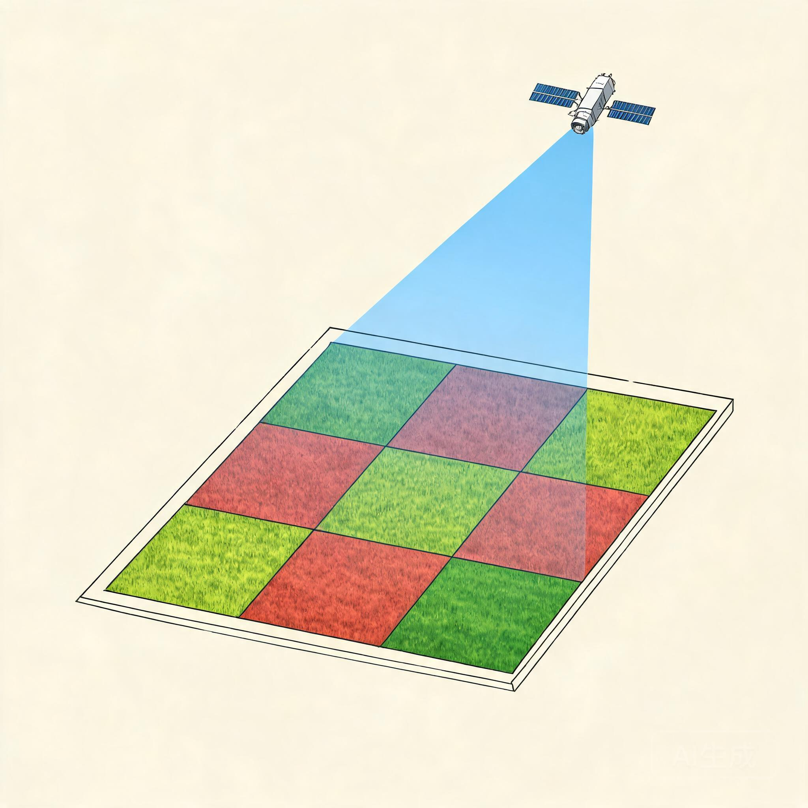
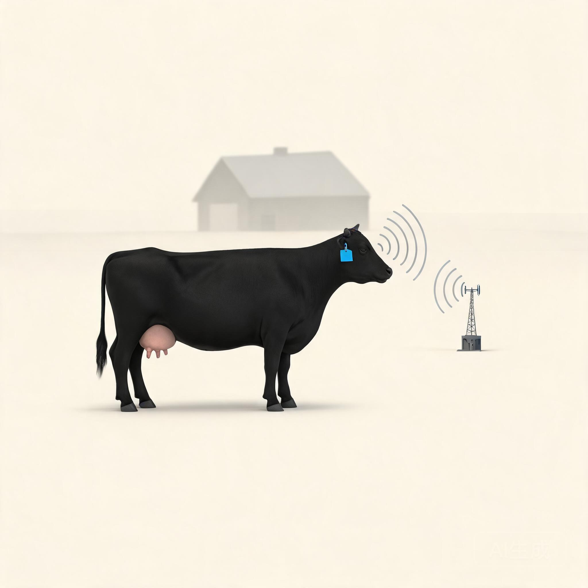
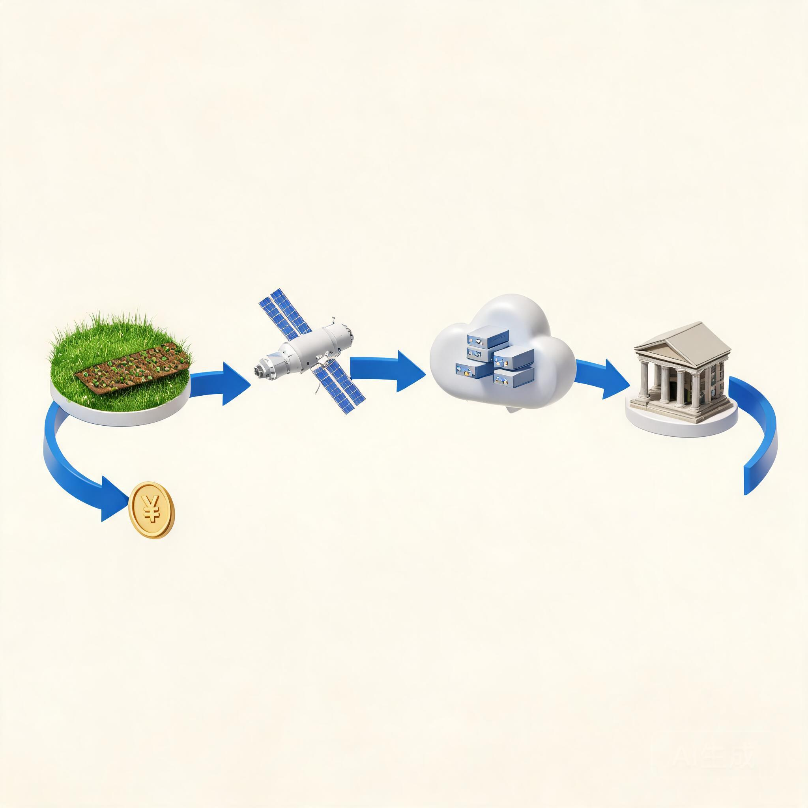

硬核科技如何赋能农业信贷
卫星能看见庄稼，摄像头能数清牛，区块链能保存记录。但贷款最终还得靠经营收入来还。
科技的价值，是让银行少跑腿、少看错、早发现风险；它不能替农户种地，也不能替市场给出好价格。
一、从第一性原理理解农业信贷
1.1 风险的三层结构
农业贷款在贷前最常碰到的不是信用风险，是自然风险和市场风险。信用风险要在前两类风险都排完之后才显形。
自然风险包括天气、病虫害和单产波动；市场风险指价格、销路和上下游账期；信用风险则是借款人主观上愿不愿意还。当这三层都查清楚了，贷前调查才算走完一遍。
1.2 还款来源只看经营收入
农户的还款来源只可能是经营收入，转移支付和财政补贴算第二还款来源，不能算主源。
一笔贷款要做的事只有一件：判断借款人在贷款存续期内能不能赚到足够的钱还本付息。如果不能，再多的反欺诈规则也只是把坏账往后挪。
1.3 技术是检验手段，不是还款来源
卫星能看见庄稼，物联网耳标能监听体温，区块链能保存记录。它们把原来要靠经验、关系和现场走访才能拿到的信息搬到屏幕上，让判断更早、更稳、更便宜。
但所有这些技术，都不直接替农户种地，也不替市场给出好价格。它们的价值在于让银行少跑腿、少看错、早发现风险；它们替代不了经营收入本身。
二、五道检验：技术怎样进入一笔贷款
一项农业信贷技术要真正进入放款流程，通常要过五道筛：价值检验、投资检验、时效检验、安全检验和信用检验。每一道都有明确的判断口径。
2.1 价值检验
看数据能否支撑一份可靠的判断：识别地块、估测长势、推算产量或数量。可重复、可对照、有误差区间，才算过了价值这道筛。
2.2 投资检验
采集、清洗和治理这套数据的成本，能不能被放款规模的收益覆盖。如果一套耳标和数据系统比这笔贷款本身还贵，那它在经济上就站不住。
2.3 时效检验
数据从现场到决策桌面的时延，能不能赶上放款周期。卫星数据有重访周期，耳标数据有上传间隔，合同订单有交付节奏，三者要能咬得上。
2.4 安全检验
数据采集是否合法、权属是否清晰、是否涉及个人隐私和商业秘密，是否符合《数据安全法》《个人信息保护法》和农业农村部门的有关规定。
2.5 信用检验
以上四道都过了，再判断借款人主观上愿不愿意还。还款意愿要和还款能力分开估，前者来自征信、诉讼和历史履约，后者来自经营。
这五道筛不是流程装饰。任何一项过不去，下游环节都只能勉强补位；勉强补位时一旦碰上行情波动，就会被放大成坏账。
三、卫星遥感把可见光变成风险变量
卫星遥感的本质是把可见光、近红外和短波红外波段的光信号译成关于作物长势、土壤湿度和地块边界的数字刻度。其中 NDVI（归一化植被指数）是最常用的一个：用近红外与红光反射率之差除以它们之和，把光信号压缩到 0 到 1 之间。

3.1 机理：叶绿素与近红外
健康叶绿素强烈反射近红外、吸收红光；NDVI 越大代表植被越密。同一块地在不同生育期会有不同曲线，把多个时点叠起来就能看出长势轨迹。
3.2 案例：网商银行的大山雀系统
网商银行 2020 年推出大山雀卫星遥感风控系统，把卫星图按地块切块，识别作物种类和长势，结合历史产量数据估算农户经营收入。截至 2024 年 4 月，累计服务农户约 800 万户，覆盖全国 31 个省市自治区、超过 100 个产粮大县。[22]
3.3 案例：农业银行山东分行
农行山东分行把卫星遥感与原有农户贷款流程结合，用于粮贷场景的贷前调查和贷后核查。山东是产粮大省，地块分散、单户规模小，遥感相当于给客户经理装了一双可量化的眼睛。
3.4 案例：兴业数金的种植流模型
兴业银行旗下兴业数金搭建了融合卫星遥感、无人机遥感和北斗定位的"空天新数据应用平台"，并在此基础上构建"种植流模型"：先用遥感数据描绘客户种植画像，再在贷前形成两组策略：反欺诈策略关注申报面积偏差、地块重复勾画和历史撂荒等信号；信用策略结合产量、价格和种植稳定性估算经营收入。[25]
3.5 局限
遥感看不到土壤类型、地下水、农药残留和单株病害，遇到多云多雨季节图像质量也会掉。模型要在县级和地块级做长期校准，否则误差会吃掉收益。
四、物联网与人工智能：让生物资产持续发声
对种植业来说，卫星遥感主要回答"长势如何"的问题；对养殖业来说，这个问题的答案要靠物联网。物联网的本质是把生物资产的体温、活动、位置和进食等指标持续写进数据库，让一头活畜变成 24 小时的数据流，再让模型用这串数据流做风险判断。

4.1 耳标、体温和活动量
智能耳标内置温度传感器和加速度计，每隔几分钟记录一次体温和活动步数。发情、疾病、转群、出栏都会在数据上留下印记，比人工观察更早，也更难伪造。
4.2 案例：山东农担数字牛平台
山东省农业发展信贷担保有限责任公司（山东农担）联合日照银行等机构，把智能耳标作为生物资产监管的硬件入口。担保公司、银行、保险公司和监管机构共享同一份数据视图，避免出现"同一头牛在多家机构同时抵押"的传统乱象。
4.3 案例：福牛贷
在内蒙古、宁夏等肉牛养殖集中区，"福牛贷"模式以耳标数据为基础，按月跟踪牛群结构和出栏计划，结合市场行情动态调整授信额度。贷后检查从现场盘点转向数据巡检，单笔业务的现场核查次数明显下降。
4.4 案例：日照银行智慧牧场
日照银行 2024 年披露的方案中，把耳标数据接入可视化平台，按牧场、按栋舍、按批次展示牛群状态；模型对异常个体给出预警，反过来再触发现场核查任务。"先看到异常、再派人"比过去"按周期巡场"更省人，也更早发现问题。
4.5 局限
耳标会掉，会被剪，会因信号不好漏传；模型对个体异常的判断仍要靠现场兽医二次确认。物联网降低了现场核查的频次，但没有完全取消它。
五、供应链与区块链：把账期和权属写在链上
农业供应链金融的核心，从来不是"区块链"三个字，而是"应收账款能不能收回"。只有当下游核心企业有真实订单、真实账期、真实履约记录时，上游种植户和养殖户才能用这张订单做抵押融资。
区块链在这一节里解决的是另一个问题：权属流转一旦发生，怎么让所有相关方在事后都查得到同一份证据。哈希链把每次转让、抵押和处置写成时间戳笔迹，篡改一笔全网皆知。它不创造信用，它只是把信用留痕。
5.1 应收账款是关键
供应链金融回到"应收账款能不能收回"这个原点。下游核心企业的付款能力，才是上游农户的真实还款来源；脱离账期的所谓"链上数据"只是装饰。
5.2 案例：恒丰银行"链捷贷"
恒丰银行针对肉牛养殖企业推出区块链存证融资方案，把活体抵押、流转、监管和处置环节的关键证据上链存证，相关数据通过北京华辰可信存证平台出具存证证书，银行据此发放贷款。系统从 2021 年起运行，是把"区块链"做成信贷流程的一个较早实例。[26]
5.3 案例：吉林"好牛快贷"
吉林"好牛快贷"产品用耳标和区块链做组合：耳标确认牛只身份和存栏数量，区块链记录抵押、流转和处置过程，银行据此放款，担保和保险机构共享同一份视图。
5.4 区块链存证的真假
链上数据本身并不等同于司法采信。银行拿到的"链上证明"，最终还是要回到《民事诉讼法》规定的电子证据规则上，配合身份认证、时间戳源和原始数据完整性，才会被法庭采信。脱离这一层的"上链"营销意义大于风控意义。
六、数据资产融资：从信息到资产负债表
数据资产融资不是把信息当作抵押品，而是把数据资源按会计准则入表后，再以企业为主体获得的银行授信。会计入表是这节概念的入口，没入表就没有"资产"可言。
财政部《企业数据资源相关会计处理暂行规定》从 2024 年 1 月 1 日起施行，把企业内部使用和对外交易的数据资源列入资产负债表。农业经营主体因此第一次有机会把"我有哪些数据"变成"我账上有哪些资产"。[27]
6.1 三个真实例子
浙江农商联合银行系统 2024 年 4 月落地首笔数据资产质押贷款，由浙江农商联合银行辖内柯桥农商银行向当地一家面料企业发放，授信 1000 万元，用企业持有的面料纹路数据作为质押物。
网商银行的畜禽活体贷基于耳标和养殖数据为养殖户提供贷款，与传统活体抵押的关键差别是把"数据"作为定价依据，而不是单纯把动物本身作为抵押物。[28]
贵阳大数据交易所 2024 年累计上架数据产品 1000 余个，覆盖 14 个行业，截至 2024 年底已促成交易额 5.6 亿元；交易完成后，数据供应商凭交易所出具的存证证书向银行申请融资，部分案例已实现落地。[29]

6.2 配图说明
这张图把会计入表过程画成一条流水线：原始数据经过确权、合规审查、成本归集、估值入账四个步骤，才在资产负债表中变成可作质押的资产。
6.3 法律边界
数据资产融资的可行性，最终取决于三条线：会计线（能否按准则入表）、法律线（数据来源是否合法、权属是否清晰、能否处置变现）、信贷线（银行是否接受数据资产作为风险敞口的替代品）。三条线缺一不可。
七、保险科技：把概率表和农户绑在一起
农业保险是农业风险定价的第一张表。它的费率来自一张大数定律的概率表，概率表来自历史灾情和产量数据；保险科技要做的是让这张表越来越细、越来越准，让它从省级走到县域，再走到地块。
7.1 成本保险、收入保险和指数保险
成本保险覆盖物化成本，保额低、费率低、保费主要由财政补贴；完全成本保险覆盖物化成本加地租，保额比成本保险高出一档；收入保险覆盖产量与价格双重波动，保额最高，也是中央财政支持的重点方向。指数保险则按区域产量或气象指数触发理赔，省去逐户查勘，是把概率表做成"按触发器结算"的一种工具。
7.2 期货 + 保险模式
"保险 + 期货"模式由保险公司向农户出具农产品价格保险，由期货公司在期货市场复制一笔反向头寸对冲价格风险。2016 年至 2023 年，全国累计开展"保险 + 期货"项目 3600 多个，覆盖 31 个省份的 30 多个农产品品种。[30]
7.3 案例：中原农业保险
中原农业保险在河南生猪价格保险中引入期货对冲，让保险产品跳出"赔本赚吆喝"的补贴依赖，把价格波动的真实风险转移给期货市场。[31]
7.4 案例：人保财险遥感测产
人保财险与多家遥感公司合作，把卫星和无人机数据用于查勘定损，2023 年在内蒙古、黑龙江等地大灾理赔中已实现"按地块按户按图"理赔，赔付周期从过去的几个月缩短到数周。
7.5 价格数据闭环
保险科技背后真正的难点，是把"价格数据"做成一条从批发市场、田头收购到期货盘面的连续曲线。农业农村部信息中心、商务部农产品监测系统、各期货交易所的盘面数据，只有互相打通，才会让价格保险真正有意义。
八、从单项技术到信贷闭环
单项技术做出漂亮的演示容易，把单项技术拼成一个能稳定放款的流程却很难。从单项到闭环，需要三件事同时在线：数据要更新得够快，模型要解释得够清楚，贷后动作要触发得够及时。
8.1 一个闭环跑通的形态
网商银行的大山雀系统是一次值得拆开来看的闭环。贷前用卫星数据识别地块、作物和长势；贷中用模型估算经营收入并给出授信；贷后用卫星数据按周巡检，发现长势异常或地块用途变更时触发预警。预警同时通知客户经理、担保机构和农户本人，形成三方在同一张数据地图上看同一头牛的局面。
截至 2024 年 4 月，大山雀累计服务农户约 800 万户，覆盖全国 31 个省市自治区、超过 100 个产粮大县，是国内单一农业信贷产品中规模最大、覆盖最广的卫星遥感应用之一。[22]
8.2 一个闭环跑不通的形态
闭环跑不通时往往不是某一项技术掉链子，而是数据、模型和组织之间的接口没接好。数据回传周期和信贷决策周期咬不上、模型解释性差导致客户经理不敢用、贷后动作没有明确的责任人和时间表，这些都会让一个漂亮的演示停留在 PPT 上。
判断一个闭环是不是真的跑通，可以问三个问题：数据多久更新一次、模型能不能向客户经理解释、预警触发后谁在什么时间内做什么动作。三个问题都答得清，才算真闭环。
8.3 数据治理作为底盘
数据治理常常是闭环里最先被砍预算的部分，但也是真正决定闭环稳不稳的部分。数据来源、字段标准、更新频率、清洗规则、存储周期、合规边界，都要写在文档里、流程里、合同里，单靠一两个数据科学家是撑不起的。
九、政策与边界：技术能做的和不能做的
技术在农业信贷里既被高估也被低估。被高估的是它对单笔贷款的边际改善，被低估的是它在政策与合规层面带来的整套新规则。讨论技术时不能离开政策的边界，政策的边界反过来又决定了技术能走多远。
9.1 政策是把双刃剑
政策在两个方向上同时发力。一方面，中央一号文件连续多年提到"智慧农业""数字普惠金融"，给农业信贷科技化明确的方向；另一方面，《数据安全法》《个人信息保护法》和《征信业管理条例》对数据采集和使用的边界划得越来越清楚。银行在两条线之间找平衡，既要敢用新数据，也要守住底线。
9.2 数据安全
《数据安全法》把数据按重要程度分级，农业经营主体的位置、长势、产量、销售收入属于敏感数据，处理时要经过脱敏、最小必要和知情同意三道关。卫星遥感图若叠加地块权属，会变成可被定位到户的数据，这一步必须按敏感数据对待。
9.3 算法歧视与可解释
模型对规模种植户、合作社和小农户可能给出不同授信结果，结果若不能解释，就会被外界读成"算法歧视"。银行需要把关键变量、模型版本和测试样本公开给监管和审计，避免"黑箱模型"成为合规盲区。
9.4 数字鸿沟
数字鸿沟在两端都存在。一端是老年农户对手机银行和远程授信的接受度，另一端是偏远地区网络覆盖不足带来的"数据真空"。政策上的解决思路是补贴数字普惠金融的运营成本，让金融机构有动力服务这一群体。
9.5 应急与韧性
技术与政策之间还留着一条应急通道。当重大自然灾害或公共卫生事件发生时，监管允许金融机构临时调整准入条件、引入替代数据、加快审批流程。这条通道是农业信贷在极端年份保持韧性的关键，也是政策与科技协同的最后一道护栏。
十、结论：把六张图装回一张表
回到文章开头那张图，把卫星俯瞰图、漏斗、耳标、哈希链、入表流水线这六张认知锚点装回同一张表，会得到一份相对完整的农业信贷科技地图。每一行是一笔贷款从识别、定价、担保到贷后处置所经历的关键节点，每一列是银行、农户、担保、保险和监管这五类主体在这一节点上做的事。
技术让这张表更密、更细、更实，但表本身没有变。还款来源是经营收入，现金流是判断的核心，资产是兜底，最后一道关始终是借款人愿不愿意还。把这一行写在方法论的最上面，再去看任何新技术时都会有一个稳定的参照系。
10.1 给硕士生的建议
读硕士阶段如果想进入农业信贷科技这个领域，三条路径相对清晰。第一条是从数据端入手，掌握遥感、物联网或区块链的基本原理，再到信贷场景里找应用；第二条是从信贷端入手，先理解风控、担保和监管框架，再补数据科学工具；第三条是从政策端入手，先理解中央一号文件、《数据安全法》和地方实施细则，再去看具体技术产品。三条路径走到深处都会回到同一张表。
10.2 留给授课老师的一句话
技术替代不了常识。当一笔农业贷款的现金流测算偏离常识太远时，再多模型也救不回来。给学生讲清楚这一点，比让他们多背十个公式更值得花时间。
课后讨论题
- 在你熟悉的县域或乡镇，过去一年最常发生的农业信贷违约原因是什么？这些原因是自然风险、市场风险还是信用风险？
- 选一家你了解的银行，列出它在农业信贷中用到的全部数据来源。这些数据来源分别属于"五道检验"中的哪一道？
- 假设你是一家县域农商行的行长，要在一年内引入卫星遥感贷前核查，你会先做哪三件事？为什么？
- 物联网耳标的数据采集是否构成对农户个人信息的处理？请按《个人信息保护法》的最小必要原则给出判断。
- 数据资产融资的可行性取决于哪三条线？如果其中一条线断了，会出现什么后果？
- 从"按周期巡场"到"按异常触发"的贷后模式转变，会改变客户经理的岗位画像吗？请具体说明。
附录
术语表
技术与方法
| 术语 | 一句话定义 |
|---|---|
| NDVI | 归一化植被指数，用近红外与红光反射率之差除以二者之和，把光信号压缩到 0 到 1 之间。 |
| 智能耳标 | 内置温度传感器和加速度计的可穿戴设备，记录体温、活动步数和位置。 |
| 区块链存证 | 把权属流转、抵押和处置环节的关键证据通过哈希链记录下来，篡改一笔全网皆知。 |
| 数据资产入表 | 按《企业数据资源相关会计处理暂行规定》把数据资源列入资产负债表，使其成为可质押资产。 |
| 完全成本保险 | 覆盖物化成本与地租的农业保险，保额比成本保险高一档。 |
| 收入保险 | 覆盖产量与价格双重波动的农业保险，保额最高，也是中央财政支持重点。 |
| 保险 + 期货 | 保险公司向农户出具价格保险，期货公司以反向头寸对冲价格风险的组合模式。 |
机构与平台
| 机构 | 一句话定位 |
|---|---|
| 网商银行 | 蚂蚁集团旗下互联网银行，大山雀卫星遥感风控系统的运营方。 |
| 农业银行 | 中央汇金旗下大型国有商业银行，山东分行把卫星遥感嵌入粮贷流程。 |
| 兴业数金 | 兴业银行旗下金融科技子公司，搭建空天新数据应用平台与种植流模型。 |
| 山东农担 | 山东省农业发展信贷担保有限责任公司，联合银行把智能耳标作为生物资产监管入口。 |
| 恒丰银行 | 全国性股份制商业银行，推出链捷贷区块链存证融资方案。 |
| 浙江农商联合银行 | 浙江省农信系统管理机构，辖内柯桥农商银行落地首笔数据资产质押贷款。 |
| 中原农业保险 | 河南省属农业保险公司，在生猪价格保险中引入期货对冲。 |
| 人保财险 | 中国人民财产保险股份有限公司，与遥感公司合作把卫星和无人机数据用于查勘定损。 |
案例与产品
| 案例 | 一句话描述 |
|---|---|
| 大山雀 | 网商银行卫星遥感风控系统，2020 年上线，截至 2024 年 4 月服务约 800 万农户。 |
| 福牛贷 | 内蒙古、宁夏等地的肉牛活体贷，按耳标数据动态调整授信额度。 |
| 好牛快贷 | 吉林肉牛养殖贷款产品，耳标确认身份、区块链记录抵押与流转。 |
| 链捷贷 | 恒丰银行区块链存证融资方案，2021 年起运行。 |
| 数据资产质押贷款 | 柯桥农商银行 2024 年 4 月落地的面料纹路数据质押贷款，授信 1000 万元。 |
参考资料
- 中共中央 国务院. 关于做好 2023 年全面推进乡村振兴重点工作的意见. 2023.
- 中共中央 国务院. 关于学习运用"千村示范、万村整治"工程经验有力有效推进乡村全面振兴的意见. 2024.
- 财政部. 企业数据资源相关会计处理暂行规定. 2023.
- 中国人民银行. 银行业金融机构数据治理指引. 2018.
- 中国银保监会. 商业银行互联网贷款管理暂行办法. 2020.
- 国家金融监督管理总局. 银行业保险业数字化转型实施意见. 2022.
- 国家金融监督管理总局. 关于做好 2024 年金融支持乡村振兴工作的通知. 2024.
- 农业农村部. 关于推进农业经营主体信贷直通车常态化服务的通知. 2023.
- 农业农村部信息中心. 农业农村大数据平台建设方案. 2022.
- 中国人民银行、农业农村部. 金融支持新型农业经营主体共同行动计划. 2023.
- 中国农业科学院农业资源与农业区划研究所. 中国农业遥感监测年度报告. 2024.
- 中国信息通信研究院. 农业数字化转型白皮书. 2023.
- 中国银行业协会. 中国银行业服务乡村振兴报告. 2023.
- 网商银行. 大山雀卫星遥感风控系统白皮书. 2023.
- 蚂蚁研究院. 数字普惠金融在乡村振兴中的应用. 2023.
- 中国农业大学经济管理学院. 农业经营主体信贷需求与供给研究. 2022.
- 中国社会科学院农村发展研究所. 中国农村经济形势分析与预测. 2023.
- 北京大学数字金融研究中心. 数字普惠金融的中国实践. 2023.
- 国务院发展研究中心金融研究所. 农业保险高质量发展研究. 2022.
- 中国期货业协会. "保险 + 期货"业务发展报告. 2023.
- 中国保险学会. 农业保险科技应用前沿. 2023.
- 中国人民大学中国普惠金融研究院. 普惠金融发展报告. 2023.
- 清华大学五道口金融学院. 中国农村金融研究报告. 2023.
- 中国银联. 农村支付环境建设报告. 2023.
- 国家乡村振兴局. 社会帮扶与产业帮扶典型案例. 2023.
- 中国农村信用合作报. 农信系统数字化转型综述. 2024.